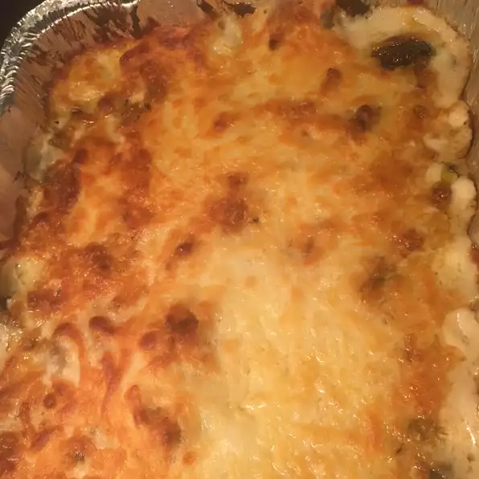

Chicken and Spinach

A different, yet wonderful twist on normal lasagna!
Ingredients
- 1 (8 ounce) package lasagna noodles
- 3 cups heavy cream
- 2 (10.75 ounce) cans condensed cream of mushroom soup
- 1 cup grated Parmesan cheese
Steps
- Preheat oven to 350 degrees F (175 degrees C). Bring a large pot of lightly salted water to a boil. Cook lasagna noodles for 8 to 10 minutes, or until al dente. Drain, and rinse with cold water.
- In a saucepan over low heat, mix together heavy cream, cream of mushroom soup, Parmesan cheese, and butter. Simmer, stirring frequently, until well blended.
- Heat the olive oil in a skillet over medium heat. Cook and stir the onion in olive oil until tender, then add garlic and mushrooms. Mix in the chicken, and cook until heated through. Season with salt and pepper.
- Lightly coat the bottom of a 9x13 inch baking dish with enough of the cream sauce mixture to coat. Layer with 1/3 of the lasagna noodles, 1/2 cup ricotta, 1/2 of the spinach, 1/2 the chicken mixture, and 1 cup mozzarella. Top with 1/3 the cream sauce mixture, and repeat the layers. Place the remaining noodles on top, and spread with remaining sauce.